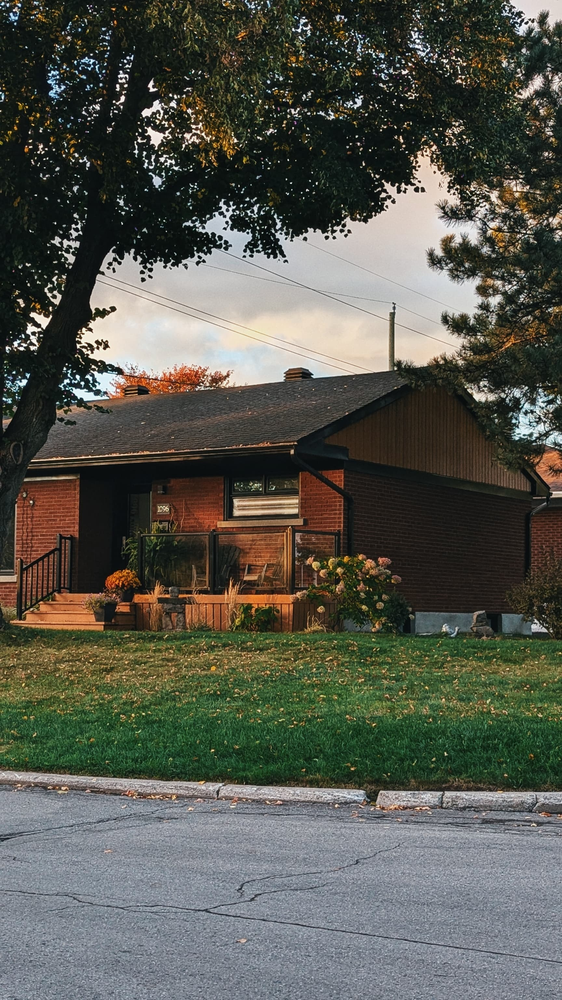

My Hobbies
- Travel
- Travelling - For me, Travelling is a way of finding myself out there. I'm a person who actually love to wander, write, take photos. I was deeeply motivated by a quote , that goes by this "Humans and trees were created on planet earth and humans were gifted with legs instead of roots to travel the world. "
- Taking Photos
- Photography - Taking Photos - I soley believe that life is temprorary and ART is forever and as a passionate individual about Art,i make photographs ,which according to me is the only way to freeze time or a moment.
- Photos I took
- These are some of the photos that i took after reaching Canada
Photo Gallery

- I'm a Cinephile
- I'm a person who finds inspiration in creating ART by watching Movies ,Series and consuming visual media. I'm trying to overcome the language barriers and dive deep into the wolrd of Cinemas
HTML Tags I've Learned
- <p>
- The paragraph tag. It's used to define a paragraph of text on a web page.
- <img>
- The image tag. It's used to embed images in a web page. It requires a 'src' attribute to specify the image source.
- <a>
- The anchor tag. It's used to create hyperlinks to other web pages or to specific parts of the same page.
- <ul> and <li>
- The unordered list and list item tags. They're used together to create bulleted lists.
- <h1> to <h6>
- The heading tags. They're used to define headings of different levels, with h1 being the highest (most important) and h6 the lowest.